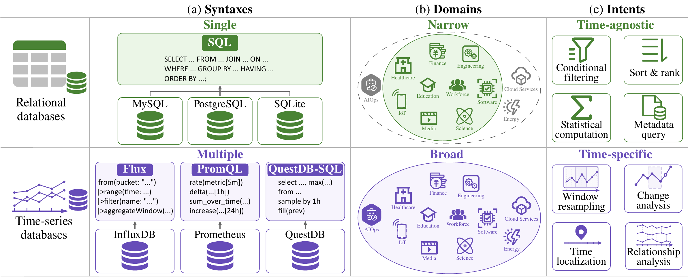
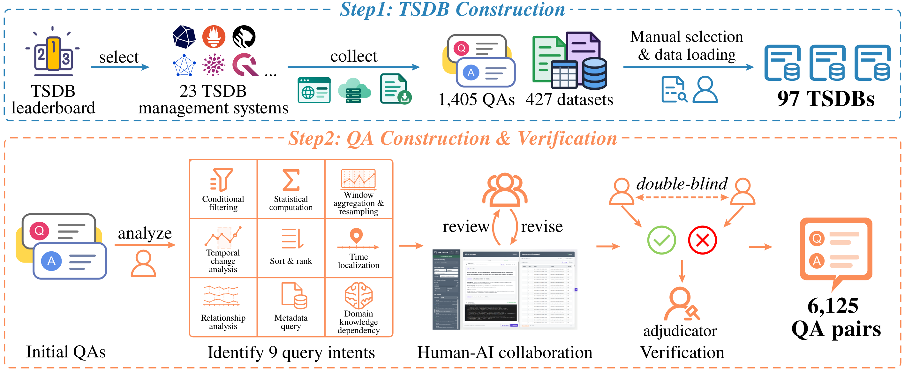

Models
-
Claude-Opus-5
48.98% -
GPT-6-Sol
46.38% -
Gemini-3.7-Flash
44.65% -
Kimi-K3
43.15% -
GLM-5.3-Flash
34.61% -
Qwen3.8-Flash
27.04% -
DeepSeek-V4-Pro
22.51%
A Multi-Syntax Benchmark for
Text-to-Query over Time-Series Databases
Large language models (LLMs) have significantly advanced natural language querying over relational databases, yet their ability to query time-series databases (TSDBs) remains largely unassessed. Existing benchmarks fail to adequately capture the non-unified query syntaxes, diverse application domains, and unique time-specific query intents inherent to TSDBs. To address this gap, we introduce TQTS-Bench, a multi-syntax benchmark for evaluating text-to-query capabilities over TSDBs. TQTS-Bench contains 6,125 high-quality question–answering (QA) pairs spanning 97 TSDBs, 23 distinct query syntaxes, 22 application domains, and 4 types of time-specific query intents. It is constructed through a human-centric AI-assisted workflow, where all QA pairs are carefully reviewed and revised by domain experts to ensure quality and correctness. Extensive evaluations of advanced LLMs and state-of-the-art text-to-query methods reveal challenges in querying TSDBs. Even the best-performing model evaluated, Claude-Opus-5, achieves only 48.98% execution accuracy, while humans reach 87.34%. Error analysis reveals that this performance gap mainly stems from the heterogeneous query syntaxes across different TSDBs, misinterpretation of time-specific intents, and incorrect schema linking. These findings highlight new opportunities to narrow the gap between current LLM capabilities and the requirements of TSDB queries in real-world applications. The benchmark is available at: https://anonymous.4open.science/r/TQTS-Bench-00CD.

TQTS-Bench brings together 23 representative TSDB management systems, selected for their popularity and accessibility. We collect real-world datasets from diverse application scenarios, inspect their authenticity and schema complexity, and select 97 representative datasets to deploy in their corresponding systems.
The construction of TQTS-Bench consists of two main steps: TSDB construction and QA construction and verification. The TSDB construction step collects and curates 97 high-quality TSDBs, and the QA construction and verification step constructs 6,125 QA pairs with a human-centric AI-assisted workflow.

We gather publicly available datasets from multiple real-world sources, including official websites, hosting platforms that export data from specific TSDBs, and datasets documented as being collected or stored using TSDBs. We manually inspect the candidate datasets based on data authenticity and schema complexity, and finally select 97 representative source datasets.
Two annotators independently hand-write queries based on the question, schema, and provided TSDB context. If both annotators obtain results consistent with the unverified answer and both determine that the question is answerable on the target TSDB, the QA pair is accepted as verified. Otherwise, the case is escalated to an adjudicator.
Execution Accuracy (EX) measures whether a generated query produces the expected answer.
Randomly sampled 10% subset